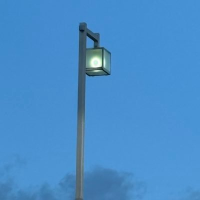

AIのセキュリティ活用に興味があり、人の介入なしにほぼフルオートで放置するだけで CVE が取れる調査ハーネス・実行環境を作れるか、を検証しているプロジェクトです。
CLI型エージェント（Claude Code / Codex）を VM 上で常駐運用し、自分は方針決めと最終確認のみ。その結果として採番されたのが CVE-2026-49411（Deno）で、報告と最終トリアージだけ手動で行いました。
CVE-2026-49411Deno の --deny-net バイパスを報告・採番（GHSA-v8fw-85r8-5m23）
MWS Cup 2026 ハッカソン提出作品 · チーム「浜松鰻」
依存関係から脆弱性情報を絞り込み、LLMの分析結果と根拠を記事で確認するWebアプリ。
主担当：フロントエンド・DB設計。機能提案、ユースケース整理、提出動画の制作にも参加。
固定 JSON スキーマでの応答、入力タグによる分離、重み付けスコア＋二段階しきい値の検出器、出力側ガードレール、/admin でのLLMOps可視化。
Laravel × gpt-4o のチャットアプリに、多層のプロンプトインジェクション対策を実装
UNION-based / Boolean-based Blind / Time-based Blind / Second-order の4種を再現。Burp Suite での検証手順を記事にしています。
SQLインジェクション学習用のやられアプリ ＋ Zenn 記事
バイブコーディングの時代にコーディング能力を落とさないよう、AIをなるべく使わずに実装。TCP connect スキャン、バナー正規化、NVD API v2.0 での CVSS 取得（v4.0 → v3.1 → v3.0 → v2 フォールバック）。
ポートスキャン結果から NVD API で CVE / CVSS を照会する CLI
HDMI キャプチャした別 PC の画面を Claude Code で解析する GUI ツール
2026.10.04 · WOLF VILLAGE NIGHT #1 にてLT登壇
専門B（プロダクトセキュリティ）の受講体験、応募課題への取り組み、SECCAMP RTA CTFでの提出処理の工夫を紹介。
登壇資料（公開調整版） · 2026.10.07 公開
在宅で130以上のご家庭を担当。Scratch / Minecraft Education / Blender、年長〜高校生のほぼ1on1授業。
AIエージェント基盤による調査の成果。報告と最終トリアージのみ手動。
人間主体・AI補助部門では3位。Web 問を担当し、4問に着手して2問 solve。